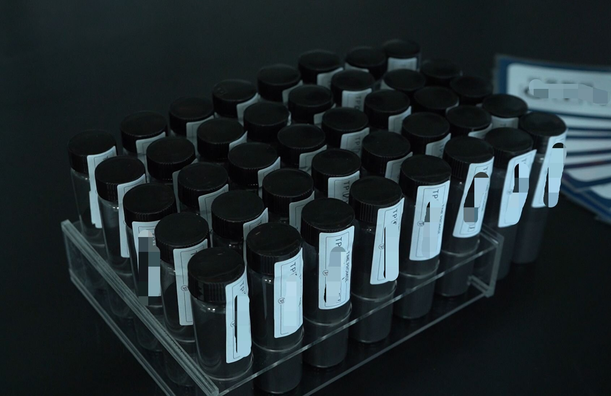
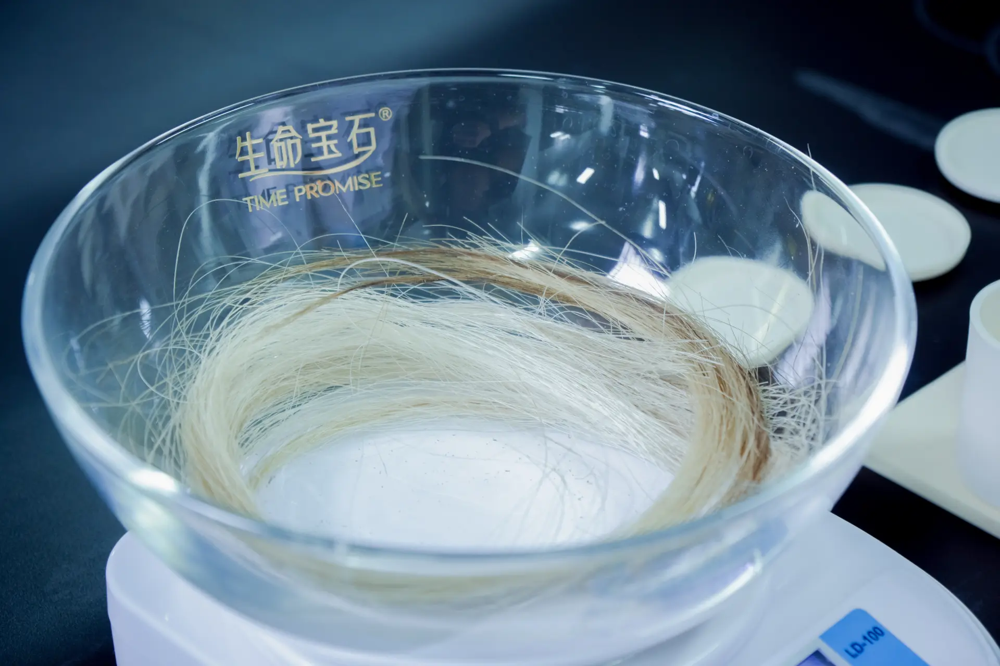

Quick Answer
Global demand for memorial diamonds is shifting from a North America-centric model to multi-regional parallel growth. North America currently holds approximately 45% of the pet memorial services market but growth is slowing to ~4.2% CAGR. Europe (~30% share) leads in compliance and ESG requirements, with Germany, the United Kingdom, France, and Italy as core markets. Asia-Pacific is the fastest-growing region at ~6.8% CAGR, driven by Japan's mature pet funeral culture and China's rising pet ownership — over 130 million registered cats and dogs in 2024. Latin America and the Middle East remain early-stage but show emerging potential. BioGem Lab's anonymized B2B inquiry data from 18 months of cross-border operations confirms this trend: active negotiations with partners in Italy, Romania, France, the United States, Japan, India, and Canada demonstrate no single-market dependency.
For an upstream memorial diamond manufacturer, understanding regional demand patterns is not a marketing exercise — it is a foundational input for production scheduling, inventory strategy, and customer support resource allocation. The market you are optimizing for in North America is not the same market you are entering in Europe or Asia-Pacific. Each region carries distinct regulatory requirements, customer expectations, and competitive dynamics.
This analysis draws on published market research from DataHorizzon Research, Dataintelo, and Technavio, combined with BioGem Lab's own anonymized B2B inquiry records from 2024 through 2026. We do not claim comprehensive market coverage — the memorial diamond segment is too specialized for that — but we can offer a view from the manufacturing floor that is not available from analyst reports alone.

Carbon sample vials at intake. Each vial corresponds to a partner order with a unique chain-of-custody identifier tracked through the ILDA third-party traceability platform.
Why Regional Analysis Matters for Upstream Manufacturers
The past 18 months of B2B white-label partnership inquiries at BioGem Lab have covered seven countries across four continents. These inquiries are not randomly distributed — each region carries a distinct procurement profile. European partners ask about traceability documentation and ESG compliance before asking about pricing. North American partners lead with turnaround time and return policies. Asian partners, particularly in Japan, inquire about white-label packaging completeness and the end-customer unboxing experience.
This regional variation has direct operational consequences. A production line optimized for speed may win in North America but fail in Europe if documentation packages are incomplete. A manufacturer with robust certification may succeed in Europe but lose in Asia-Pacific if the white-label packaging does not meet local aesthetic standards. Understanding these differences before committing capacity is the difference between a scalable partnership and a costly misfire.
The analysis that follows is organized around four regional engines. We examine each region's market size, growth trajectory, unique characteristics, and the specific demands it places on upstream manufacturers. We conclude with operational recommendations for manufacturers evaluating multi-regional expansion.
Global Market Foundation: The Pet Memorial Economy
Memorial diamonds do not exist as an independent market category. They are a premium sub-segment of the broader pet memorial services industry, which itself sits at the intersection of pet humanization trends, cremation service infrastructure, and personalized memorial product demand. Understanding the parent market is essential for sizing the addressable demand for memorial diamonds.
DataHorizzon Research estimates the global pet memorial services market at approximately $2.8 billion in 2024, with projections reaching $5.1 billion by 2033 at a compound annual growth rate (CAGR) of 6.8%. Within this market, cremation services, memorial products, and funeral services form the three primary revenue pillars. Memorial diamonds fall under the memorial products category, where the sub-segment of memorial jewelry is growing at 7.2% CAGR — faster than the overall market, according to Dataintelo.
Two structural trends are driving this growth. First, pet cremation rates continue to rise. In the United States, cremation rates for pets have exceeded 73% (Dataintelo, 2025), creating a reliable supply of hair and fur feedstock for carbon extraction processes. Second, the "productization" of pet memorials is accelerating. Pet owners who previously accepted a simple urn are now seeking personalized, lasting memorial objects — and memorial diamonds represent the highest-value tier within this product spectrum.
Key insight: The ceiling for memorial diamond demand is not determined by the diamond industry but by the penetration rate and product-upgrade velocity of the pet memorial services market. A manufacturer sizing its capacity against the lab-grown jewelry market is using the wrong reference frame.
North America: The Largest Mature Market
North America holds approximately 45% of the global pet memorial services market, making it the largest addressable region for memorial diamond manufacturers. The United States dominates within the region, supported by the world's highest pet ownership rates, mature cremation infrastructure, and a cultural environment where pets are increasingly regarded as family members rather than property.
| Metric | Value | Source |
|---|---|---|
| Pet memorial services market share (2024) | ~45% | DataHorizzon Research |
| Pet memorial products market (2025) | ~$490 million | Dataintelo |
| CAGR (2026–2034) | ~4.2% | DataHorizzon Research |
| U.S. pet cremation rate | 73%+ | Dataintelo |
| Core demand driver | High pet ownership, mature B2B distribution | Industry analysis |
For upstream manufacturers, North America is best understood as a 存量市场 (mature stock market). Growth is positive but decelerating. The competitive focus has shifted from market education to operational efficiency: who can deliver reliably, at consistent quality, with the shortest turnaround time. BioGem Lab's North American inquiries consistently cite competitor delivery timelines of 7–10 months as a critical pain point. Our 60-day production cycle is not a marginal improvement in this context — it is a structural competitive advantage.
The B2B opportunity in North America lies in channel penetration rather than consumer education. Pet cremation service providers, veterinary clinic networks, and independent online memorial jewelry brands are the addressable customers. They already understand the product category. What they need is a reliable manufacturing partner who can white-label under their brand and deliver on a predictable schedule.
Europe: Compliance-Driven Growth
Europe accounts for approximately 30% of the global pet memorial services market, with a CAGR of ~4.4% — slightly outpacing North America. The core markets are Germany, the United Kingdom, France, Italy, the Netherlands, and the Nordic countries. What distinguishes Europe is not market size but the intensity of its regulatory and compliance requirements.
| Metric | Value | Source |
|---|---|---|
| Pet memorial services market share (2024) | ~30% | DataHorizzon Research |
| CAGR (2026–2034) | ~4.4% | DataHorizzon Research |
| EU households with pets | ~88 million | DataHorizzon Research |
| Core demand driver | Animal welfare tradition, environmental preference | Industry analysis |
European partners operate under a compliance-first procurement framework. In our negotiations with Italian and French distributors, the ILDA third-party traceability platform and CCIC national inspection certification were not treated as trust signals — they were treated as prerequisites. Partners requested documentation of carbon source chain-of-custody, third-party assay certificates, and ESG alignment statements before discussing commercial terms.
This has a subtle but important implication for product positioning. European consumers show a higher preference for natural and biodegradable memorial materials (stone, wood, ceramic) than consumers in other regions. However, laboratory-grown diamonds benefit from a counter-narrative: their no-mining origin aligns with ESG priorities and carbon-footprint reduction goals. Manufacturers who can document the environmental profile of their HPHT synthesis process — energy sources, waste management, carbon efficiency — have a defensible position in the European market.
The European market is also notably fragmented. No single dominant player covers the entire continent, creating openings for regional white-label distributors. BioGem Lab has observed Eastern European distributors adopting a dual-hub strategy — using Mexico and Luxembourg as logistical springboards to serve both Latin American and Western European markets — demonstrating the operational creativity that fragmentation encourages.
Asia-Pacific: The Fastest-Growing Region
Asia-Pacific represents approximately 15% of the global pet memorial services market but grows at ~6.8% CAGR — the fastest rate of any region. The growth logic here is fundamentally different from North America or Europe. This is an emerging market in the early stages of structural transformation.
| Metric | Value | Source |
|---|---|---|
| Pet memorial services market share (2024) | ~15% | DataHorizzon Research |
| CAGR (2026–2034) | ~6.8% (fastest) | DataHorizzon Research |
| China registered cats and dogs (2024) | 130+ million | DataHorizzon Research |
| India diamond jewelry purchasers (2030 proj.) | 65+ million | Technavio |
| Core demand driver | Rising pet ownership, cultural Westernization | Industry analysis |
Japan is the most mature pet memorial market in Asia-Pacific. Buddhist funeral traditions include pet memorial tablets (ihai), and the cultural infrastructure for pet aftercare is well-established. Japanese partners who have approached BioGem Lab have explicitly requested integration of memorial diamonds into existing "pet aftercare + custom jewelry" product lines. The product-market fit is not theoretical — it is already validated by consumer behavior.
China presents a different profile. With the world's largest registered pet population — over 130 million cats and dogs — the raw demand potential is enormous. However, pet memorial service penetration remains low relative to pet ownership. BioGem Lab's domestic cases (peony diamond, Hakka ancestral-root diamond, camphorwood diamond) demonstrate that the technical capability exists, but the B2B export direction from China remains primarily outward. Local market development will likely require a 2–3 year consumer education cycle before demand matches supply capacity.
India is an outlier worth watching. The country has a massive diamond jewelry consumption base — Technavio projects over 65 million active diamond jewelry purchasers by 2030. However, memorial diamonds as a category are still in the earliest stage of market development. BioGem Lab's discussions with Indian partners have revealed strong interest, but also a recurring request for colored diamonds — a product category BioGem Lab does not offer. Our E–H color grade policy must be communicated clearly in this market to avoid mismatched expectations.

Laboratory bench during carbon sample preparation. Regional demand variation directly affects intake volume forecasting and purification batch scheduling.
Latin America and MENA: Early-Stage Opportunities
Latin America and the Middle East & Africa together represent less than 16% of the global pet memorial services market. These are early-stage regions where the product category is largely unknown and the infrastructure for pet aftercare is still developing. But early-stage does not mean negligible.
In Latin America, Brazil and Mexico are the primary markets. Mexico's pet cremation rate is rising rapidly, and some cross-border distributors have identified Mexico City as a strategic entry point for serving both the domestic market and as a logistics hub for U.S.-Latin American trade. The window for establishing brand presence in these markets is currently open — but it will not remain open indefinitely.
The Middle East is currently negligible in absolute terms. However, the luxury consumption culture in the Gulf states — particularly the UAE and Saudi Arabia — could create a niche market for high-end memorial jewelry within the next five years. This is speculative, but not irrational. Manufacturers with excess capacity and long-term horizon may find value in early relationship-building even before commercial volumes materialize.
Implications for Upstream Manufacturers
The regional analysis above translates into three operational imperatives for memorial diamond manufacturers considering multi-market expansion.
1. Abandon the "Global Uniform" Product Strategy
North American partners prioritize speed — a 60-day production cycle versus the 7–10 month industry standard is a decisive competitive weapon. European partners prioritize documentation — ILDA traceability, CCIC certification, and carbon-footprint transparency are non-negotiable. Asia-Pacific partners, particularly in Japan, prioritize completeness — the white-label packaging, the unboxing experience, and the end-customer emotional journey matter as much as the diamond itself. A single product manual cannot serve all three regions.
2. Regional Distributors Are Necessary, Not Optional
Cross-border direct sales in memorial diamonds face structural barriers that are not present in conventional jewelry or industrial goods. Biological sample transport crosses customs boundaries with varying biosecurity regulations. Terminal customer communication requires local language capability and cultural fluency. The emotional sales conversation — explaining to a grieving pet owner that their companion's fur will become a diamond — cannot be effectively conducted through remote channels or translated brochures.
BioGem Lab's cross-border experience has consistently validated the same conclusion: regional white-label distributors are the only efficient path into local markets. The manufacturer provides production capability, quality assurance, and documentation. The distributor provides market access, customer communication, and local regulatory navigation. This division of labor is not a compromise — it is the only model that scales.
3. Data Gaps Are Content Opportunities
No market research firm currently quantifies memorial diamonds as a standalone category. All available figures are cross-estimates from "pet memorial services" and "laboratory-grown diamonds" — two much larger categories that share only partial overlap with memorial diamonds. This data gap is not merely an inconvenience. It is a content marketing opportunity.
The manufacturer who first publishes a rigorous, data-driven framework for sizing and segmenting the memorial diamond market — based on real production data, customer geography, and inquiry flow — will establish definitional authority. This authority translates into search visibility, partnership credibility, and ultimately, pricing power. BioGem Lab is investing in this analytical infrastructure precisely because the gap is too valuable to leave unfilled.
Manufacturing Partnership Inquiry
BioGem Lab manufactures memorial diamonds under white-label and OEM arrangements for partners in 14 global markets. Our standard production cycle is approximately 60 days for diamond synthesis, with full CCIC traceability documentation and ILDA third-party platform verification. We do not sell to end consumers.
Key Data Reference
| Indicator | Value | Source |
|---|---|---|
| Global pet memorial services market (2024) | $2.8 billion | DataHorizzon Research |
| Global pet memorial services market (2033 proj.) | $5.1 billion | DataHorizzon Research |
| Overall market CAGR (2025–2033) | 6.8% | DataHorizzon Research |
| Global pet memorial products market (2025) | $1.3 billion | Dataintelo |
| Memorial jewelry CAGR (2026–2034) | 7.2% | Dataintelo |
| U.S. pet cremation rate | 73%+ | Dataintelo |
| North America market share | ~45% | DataHorizzon Research |
| Europe market share | ~30% | DataHorizzon Research |
| Asia-Pacific market share | ~15% | DataHorizzon Research |
| Asia-Pacific CAGR | 6.8% (fastest) | DataHorizzon Research |
| China registered pet cats and dogs (2024) | 130+ million | DataHorizzon Research |
| India diamond jewelry active purchasers (2030 proj.) | 65+ million | Technavio |
Frequently Asked Questions
Q: Which region has the largest memorial diamond market?
North America holds approximately 45% of the global pet memorial services market, making it the largest addressable market for memorial diamonds. The United States leads with a pet cremation rate exceeding 73%, providing both the cultural acceptance and the physical feedstock (hair and fur) for diamond production.
Q: Which region is growing fastest for memorial diamond demand?
Asia-Pacific is the fastest-growing region with a CAGR of approximately 6.8%. Japan has the most mature pet funeral culture in the region, while China registered over 130 million cats and dogs in 2024. India represents an emerging opportunity with over 65 million projected active diamond jewelry purchasers by 2030.
Q: What makes the European memorial diamond market different?
Europe emphasizes compliance, traceability, and ESG alignment. European partners consistently require third-party certification (CCIC), carbon footprint transparency, and documented chain-of-custody through the ILDA platform. Laboratory-grown diamonds benefit from ESG positioning due to their no-mining origin. The market is fragmented, creating opportunities for regional white-label distributors.
Q: Should manufacturers use the same product strategy in every region?
No. North American partners prioritize speed — BioGem Lab's 60-day production cycle versus competitor timelines of 7–10 months is a decisive advantage. European partners prioritize documentation and certification. Asia-Pacific partners, particularly in Japan, emphasize white-label packaging completeness and end-customer experience. A single product manual cannot serve all three regions effectively.
Q: What is the total addressable market for memorial diamonds?
Memorial diamonds are nested within the broader pet memorial services market, which DataHorizzon Research estimates at $2.8 billion in 2024, projected to reach $5.1 billion by 2033 at a 6.8% CAGR. Memorial jewelry as a sub-category grows at 7.2% CAGR, faster than the overall market. There is no independent market research quantifying memorial diamonds as a standalone category.
Q: Why are regional distributors essential for manufacturers?
Cross-border direct sales are operationally challenging for memorial diamonds. Biological sample transport crosses customs boundaries with varying biosecurity regulations. Terminal customer communication requires local language and cultural context. Emotional sales conversations about pet loss cannot be effectively conducted through remote channels. BioGem Lab's experience confirms that regional white-label distributors are the only efficient path into local markets.
Related Articles
Memorial Diamond Industry Trends: 2026 Market Analysis
Comprehensive market analysis examining growth drivers, competitive landscape, supply chain geography, and technology trends in laboratory-grown memorial diamonds.
Memorial Diamond OEM Partnerships: What Three Cross-Border Deals Taught Us
Real friction points from cross-border B2B memorial diamond partnerships — supply chain customization, capability-demand alignment, and biological sample transport regulations.
Global Memorial Diamond Supply Chains Explained
How biological carbon samples travel from partner to laboratory to finished stone — logistics, customs, documentation, and the operational details that determine delivery reliability.
How Pet Cremation Services Evaluate Memorial Diamond Suppliers
A data-driven procurement guide for pet cremation and aftercare providers evaluating memorial diamond manufacturers — six criteria with industry benchmarks and red flags.
1 BioGem Lab's carbon extraction and purification technology is protected under Chinese National Invention Patent ZL 201010565778.9. All regional market data cited from third-party sources (DataHorizzon Research, Dataintelo, Technavio) is used for analytical context and does not constitute investment advice. BioGem Lab inquiry data has been anonymized to protect partner confidentiality.